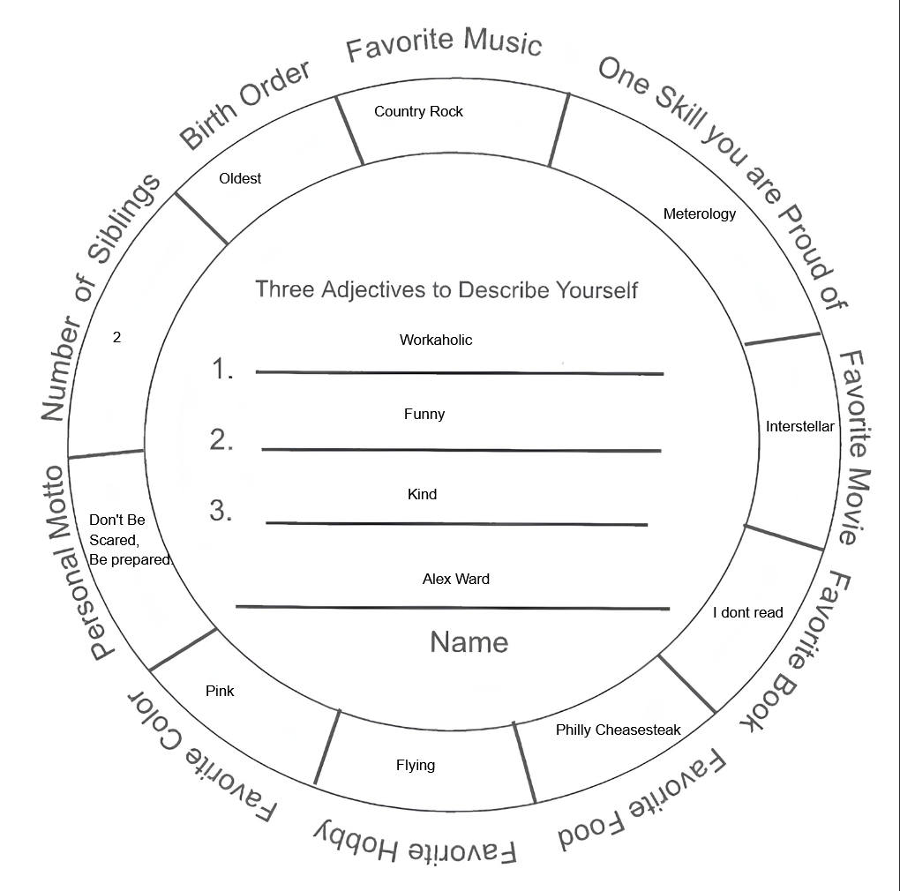

Alex Ward
Personal Identity Wheel
Text Below Image

I think the only thing that felt really difficult was my favorite book. I didn't really have anything else that was difficult other than maybe favorite music but I just listened to all different kinds of music and I like all of them.
I also don't think I have very much in common with others. I actually enjoy that about myself. I like to be a little unique but also blend in just a tad bit.
I don't know how much my personal identity connects with my social identity because I somewhat try and keep them separate, more so because I'm in a stoic and disconnected type of social identity, partly due to my job.